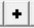
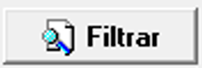

Convenções Do Sistema
 - Caixa de Listagem
- Caixa de Listagem
Clique sobre a seta para ativar a seleção, ele irá trazer todos os possíveis valores para o campo em questão. Caso necessite de algum valor que não consta na lista, deverá clicar com o botão direito do mouse em cima da tela e acionar o cadastro correspondente a aquele campo.
Campo
Posicionado em cima de um campo, o mesmo mostrará por alguns segundos uma mensagem resumida sobre seu significado. Neste exemplo aparecerá a seguinte mensagem: 'Nome do Cliente'. Para posicionar em um determinado campo use o mouse ou as teclas Enter ou Tab.

- NovoInsere um novo registro no cadastro. Ele pode aparecer em dois lugares diferentes com a mesma função ( na página de pesquisa ou nas páginas que permitem a inserção de novos registros).
 - Caixa de Seleção
- Caixa de Seleção
Selecione uma das opções apresentadas, clicando com o mouse em cima da opção desejada. Estando com uma opção marcada, ao clicar em outra ela será desmarcada.
 - Marcador
- Marcador
Quando marcado representa que SIM, para desmarcar ou marcar dê um clique com o mouse em cima do campo.
 - Pesquisa
- Pesquisa
Executa pesquisa, quando clicado aciona uma pesquisa referente a página em questão.

- FiltrosExecuta filtro, quando clicado aciona a tela de filtros.
Navegadores
Navega pelos registros de um arquivo. Suas funções são as seguintes da esquerda para a direita.
- Primeiro Registro -> Vai para o primeiro registro.
- Registro Anterior -> Volta para o registro anterior.
- Proximo registro -> Vai para o proximo registro.
- Último registro -> Vai para o último registro.
Estando em qualquer tela do sistema com exeção do principal, ao clicar o botão direito do mouse, será apresentado uma relação das telas que podem serem acessadas através daquele lugar, sem perder os dados que já foram digitados. Para acessar outra tela, dê um clique em cima da linha desejada.
Menu Principal